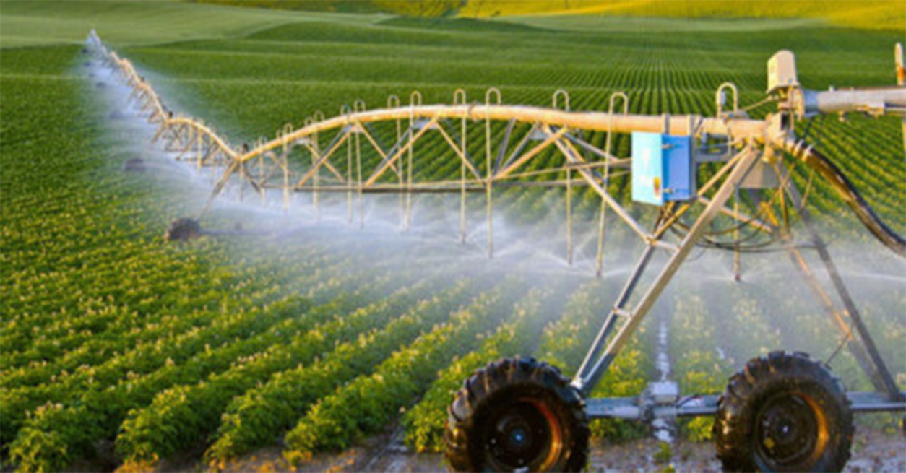

“Phấn đấu có 1.500 hợp tác xã nông nghiệp (HTXNN) công nghệ cao vào năm 2020” – mục tiêu này được Thứ trưởng Bộ NNPTNT Trần Thanh Nam nêu ra tại hội nghị phát triển nông nghiệp ứng dụng công nghệ cao trong các HTXNN, do Bộ NNPTNT phối hợp UBND tỉnh Lào Cai tổ chức ngày 17.1.
Đã có 193 HTX nông nghiệp ứng dụng công nghệ cao
Hiện, cả nước có tổng số 193 HTX nông nghiệp có ứng dụng công nghệ cao. Các lĩnh vực sản xuất của HTX ứng dụng công nghệ cao phổ biến là sản xuất rau, trái cây, hoa, chăn nuôi gà, lợn, thủy sản…
Đến thời điểm này có khoảng 2/3 trong tổng số 63 tỉnh, thành phố trong cả nước có các HTX ứng dụng công nghệ cao trong sản xuất. Những vùng có nhiều vùng có nhiều HTX nông nghiệp ứng dụng công nghệ cao vào sản xuất nhất như Tây Nguyên (57 HTX), đồng bằng sông Cửu Long (35 HTX), trung du miền núi phía Bắc (22 HTX)…
Theo Thứ trưởng Bộ NNPTNT Trần Thanh Nam, đối với HTXNN, hiện nay Bộ xác định có 3 vấn đề cần phải tập trung giải quyết: Trước hết là vấn đề tăng cường tập huấn để nâng cao năng lực quản trị của các HTX; thứ hai là phải hướng dẫn HTX ứng dụng công nghệ cao trong sản xuất nông nghiệp để tăng chất lượng, giá trị và năng suất của các sản phẩm; thứ ba là triển khai liên kết sản xuất giữa các HTX, hộ nông dân, doanh nghiệp để tạo ra chuỗi sản xuất vừa đảm bảo giá trị cao, đồng thời giảm chi phí sản xuất.
“HTXNN ứng dụng công nghệ cao là hoàn toàn hợp lý và cũng không nên quan niệm ứng dụng công nghệ cao là phải có nhà kính, nhà lưới hiện đại hay công nghiệp hiện đại. Tất cả rất đơn giản, chỉ là ứng dụng công nghệ sinh học trong sản xuất nông nghiệp cũng là sản xuất nông nghiệp công nghệ cao” – ông Nam cho hay.